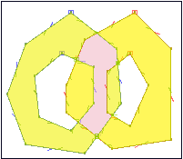

Note
| Fecha | Autores |
|---|---|
| 1 Noviembre 2012 |
|
| 15 Octubre 2013 |
|
| 1 Diciembre 2013 |
|
©2012 Micho García
Excepto donde quede reflejado de otra manera, la presente documentación se halla bajo licencia : Creative Commons (Creative Commons - Attribution - Share Alike: http://creativecommons.org/licenses/by-sa/3.0/deed.es)
Análisis espacial¶
El análisis de datos con SIG tiene por finalidad descubrir estructuras espaciales, asociaciones y relaciones entre los datos, así como modelar fenómenos geográficos. Los resultados reflejan la naturaleza y calidad de los datos, además de la pertinencia de los métodos y funciones aplicadas. Las tareas y transformaciones que se llevan a cabo en el análisis espacial precisan datos estructurados, programas con las funciones apropiadas y conocimientos sobre la naturaleza del problema, para definir los métodos de análisis.
El proceso convierte los datos en información útil para conocer un problema determinado. Es evidente que los resultados del análisis espacial añaden valor económico y, sobre todo, información y conocimiento a los datos geográficos
Operadores espaciales¶
Estos son los encargados de realizar operaciones geométricas entre las geometrías que se les pasa como argumentos. Están definidos en la norma SFA y PostGIS soporta todos ellos.
Buffer¶
Es el conjunto de puntos situados a una determinada distancia de la geometría

Acepta distancias negativas, pero estas en lineas y puntos devolverán el conjunto vacio.
Intersección¶
Genera una geometría a partir de la intersección de las geometrías que se les pasa como parámetros.
{kind=link}
¿Cúal es el area en común de dos círculos situados en los puntos (0 0) y (3 0) de radio 2?:
SELECT ST_AsText(ST_Intersection(
ST_Buffer('POINT(0 0)', 2),
ST_Buffer('POINT(3 0)', 2)
));
Práctica¶
Trabajaremos con la capa honduras_carreteras y edificaciones. Comprobaremos en el estado de Olancho, cuantas casas se encuentran afectadas por el ruido de este tipo de vias. Para determinar si una vivienda se ve afectada por el ruido, tomaremos como valor 500m el mínimo recomendado para vivir alejado de este tipo de vías.
Primero crearemos una capa con las vias de este tipo que se encuentren en Choluteca:
# SELECT * INTO gis.vias1_choluteca
FROM (
SELECT ca.gid, ca.tipo, ca.geom FROM gis.honduras_carreteras as ca,
gis.honduras_departamentos as de
WHERE ST_Intersects(ca.geom, de.geom)
AND de.name_1 like 'Choluteca'
AND ca.tipo like 'Primary Route'
) as foo
Ahora calcularemos el buffer de 500m para las vías y lo guardaremos en otra tabla:
# SELECT * INTO gis.buffer_vias1_choluteca
FROM (
SELECT ca.gid, ca.tipo, ST_Buffer(ca.geom, 500, 'endcap=round join=round')::geometry('POLYGON', 32616) as geom FROM gis.vias1_choluteca as ca
) as buf
Y podremos obtener las edificaciones tipo casa que se encuentren a menos de 500m de la via:
# SELECT * INTO gis.casas_afectadas
FROM (
SELECT casas_cho.gid, casas_cho.geom
FROM (
SELECT ed.gid,ed.geom
FROM gis.edificaciones as ed, gis.honduras_departamentos as dep
WHERE ST_Intersects(dep.geom, ed.geom)
AND ed.tipo = 1
AND dep.name_1 like 'Choluteca'
) as casas_cho, gis.buffer_vias1_choluteca as buf
WHERE ST_Intersects(buf.geom, casas_cho.geom)
) as foobar
Unión¶
Al contrario que en el caso anterior, la unión produce una geometría común con las geometrías que se le pasa a la función como argumento. Esta función acepta como parámetro dos opciones, las geometrías que serán unidas:
ST_Union(Geometría A, Geometría B)
o una colección de geometrías:
ST_Union([Geometry])

Práctica¶
Tratar de simplificar todos los municipios de Olancho en un único polígono y comprobar si generan una geometría identica a la de su departamento.
Para esto se podría usar la versión agregada ST_Union, que toma como entrada un conjunto de geometrías y devuelve la unión de las mismas también como geometría.
La consulta SQL es ésta:
# SELECT * INTO gis.municipios_olancho
FROM (
SELECT mun.depart as nombre, ST_Union(mun.geom) as geom FROM gis.honduras_municipios as mun,
gis.honduras_departamentos as dep
WHERE mun.depart like 'Olancho' group by mun.depart
) as foo
Para comprobar si son iguales:
# SELECT ST_Equals(mun.geom, dep.geom)
FROM gis.honduras_departamentos as dep, gis.municipios_olancho as mun
WHERE dep.name_1 like 'Olancho';
Diferencia¶
La diferencía entre dos geometrías A y B, son los puntos que pertenecen a A, pero no pertenecen a B
{kind=link}
ST_Difference(Geometría A, Geometría B)
Diferencia simétrica¶
Es el conjunto de puntos que pertenecen a A o a B pero no a ambas.

ST_SymDifference(Geometría A, Geometría B)
Tipos de geometrías devueltas¶
El tipo de geometrías que devuelven estas operaciones no tienen porque ser igual al tipo de geometrías que le son pasadas como argumentos. Estas operaciones devolverán:
- Una única geometría
- Una geometría Multi si está compuesta por varias geometrías del mismo tipo
- Una GeometryCollection si está formada por geometrías de distinto tipo.
En este último caso habrá que proceder a una homogeneización de las geometrías que son devueltas, para ello podremos utilizar diferentes estrategias:
- El uso de clausulas de filtrado, por ejemplo indicando que solo se devuelvan aquellas geometrías cuya intersección sea una línea.
- Crear las tablas de salida de tipo Multi, en este caso las geometrías que no sean multi podrán ser convertidas a este tipo mediante la función ST_Multi
- En caso de que las geometrías devueltas sean tipo GeometryCollection, será necesario iterar esta colección, y extraer mediante la función ST_CollectionExtract las geometrías en las que estamos interesados, indicandole para ello a la función la dimensión de las geometrías.
Transformación y edición de coordenadas¶
Mediante el uso de diferentes funciones seremos capaces de manejar transformaciones entre sistemas de coordenadas o hacer reproyeciones de las capas. Para un manejo básico de estas utilizaremos las funciones que PostGIS pone a nuestra disposición:
- ST_Transform(geometría, srid), que nos permite la transformación de la geometría al SRID que le pasamos por parámetro.
- ST_SRID(geometria) nos muestra el SRID de la geometría
- ST_SetSRID(geometria, srid) asigna el SRID a la geometría pero sin relizar la transformación
En la tabla spatial_ref_sys encontraremos la definición de los sistemas de coordenadas de los que disponemos. Podremos consultar la descripción de ellos mediante consultas select del estilo:
# select * from spatial_ref_sys where srid=4326;
Para transformar las geometrías en otros sistemas de coordenadas, lo primero que debemos saber es el sistema de coordenadas de origen y el de destino. Hemos de consultar que estos se encuentran en la tabla spatial_ref_sys. En caso de que alguna de nuestras tablas no tenga asignado un SRID, el valor de este será 0, valor por defecto, por lo que habrá que asignarle el sistema de coordenadas antes de la transformación.
Cambio del SRS de una tabla¶
Tras la importación de una capa mediante shp2pgsql nos damos cuenta de que en el momento de la carga no se eligió el SRS de la misma por lo que ahora nos aparece con el SRS por defecto 0 (versiones de PostGIS >= 2.0). Para no realizar la importación de nuevo vamos a ver como se puede cambiar el SRS de la capa.
# UPDATE gis.farmacias SET geom = ST_SetSRID(geom, 32616);
ERROR: Geometry SRID (32616) does not match column SRID (4326)
****** Error ******
ERROR: Geometry SRID (32616) does not match column SRID (4326) SQL state: 22023
Esto nos indica que no es posible almacenar en la tabla datos con el SRS 32616 ya que solo permite SRS 4326.
Podremos modificar el tipo de dato si tiene restricciones que comprueben el SRS mediante la eliminación de la restricción y la recreación de la misma con el nuevo SRS. PostGIS nos ofrece la función updateGeometrySRID que realizaría de manera automática las operaciones anteriores:
# SELECT ST_AsEWKT(way) FROM gis.farmacias;
"SRID=4326;POINT(-87.2238485 14.0978939)"
# SELECT updateGeometrySRID('gis','farmacias', 'way', 32616);
# SELECT ST_AsEWKT(way) FROM gis.farmacias;
"SRID=32616;POINT(-87.2238485 14.0978939)"
Podremos comprobar facilmente que se ha realizado el cambio del sistema de coordenadas, pero también veremos que el valor de las mismas no ha cambiado.
Reproyección de la capa¶
Para realizar la reproyección de una capa disponemos de la función ST_Transform. Si queremos reproyectar una capa podremos hacerlo facilmente transformando las coordenadas y creando con ellas una nueva tabla:
# SELECT * INTO gis.farmacias_reproyectadas
FROM (
SELECT osm_id,ST_Transform(way, 32616) FROM gis.farmacias
) as foo
Si lo que queremos es reproyectar la misma capa:
# ALTER TABLE gis.farmacias ALTER COLUMN way TYPE geometry;
# UPDATE gis.farmacias SET way = ST_Transform(way, 32616);
# ALTER TABLE gis.farmacias ALTER COLUMN way TYPE geometry('POINT', 32616);
Simplificacióon de geometrías¶
ST_RemoveRepeatedPoints(geom), elimina los puntos repetidos de los vértices. En el modelo usado por PostGIS se permiten vertices con puntos repetidos.
# SELECT ST_AsText(ST_RemoveRepeatedPoints('LINESTRING(0 0, 1 0, 1 0, 3 0, 3 0, 6 0, 8 0)');
"LINESTRING(0 0, 1 0, 3 0, 6 0, 8 0)"
ST_SnapToGrid(geom), realiza un redondeo de las coordenadas de los vértices de una geometría. Además el uso de esta función elimina los vértices que se encuentran en una misma celda. Para realizar el proceso se utiliza una rejilla que se pasa a la función como parte de los parámetros.
# SELECT st_isvalid(geom) FROM gis.honduras;
# SELECT * INTO gis.honduras_snap FROM (select st_snaptogrid(geom, 100)::geometry(‘MULTIPOLYGON’, 32616) as geom from gis.honduras) as foo
# SELECT sum(st_npoints(geom)) FROM gis.honduras_snap
# SELECT st_isvalid(geom) FROM gis.honduras_snap;
Otras herramientas de simplificación de geometrías son ST_Simplify y ST_SimplifyPreserveTopology